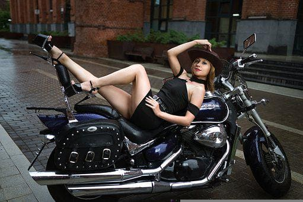
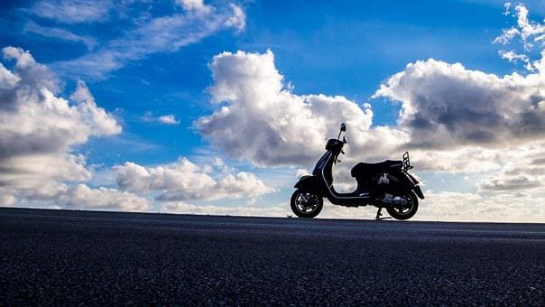
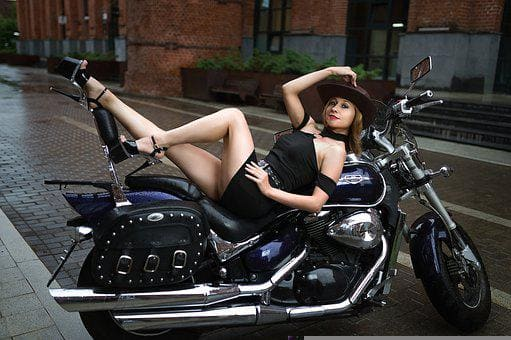
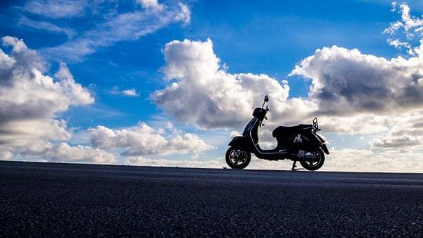

Preguntas Frecuentes
üèç¬øQu√© debo tener en cuenta para empezar en el mundo de las motocicletas?
üèçAspectos a tener en cuenta cuando se adquiere una 0km y una usada...
üèç¬øC√≥mo s√© si mi moto tiene una falla?
üèç¬øPor qu√© es importante conocer el mantenimiento de mi motocicleta si para eso est√°n los mec√°nicos?
üèç¬øC√≥mo actuar en caso de una falla mec√°nica en cualquier sitiaci√≥n y/o escenario?
üèç¬øQu√© es la conducci√≥n responsable y por que me interesar√≠a √©ste t√©rmino?
Roque Toque
Preguntó el 23/07/2022:
Buenas tardes muchachos, alguno tiene una kawa z400? Tengo un sonido raro en la aceleración, si alguno sabe que podría ser me sería de gran ayuda✅
⭐ 17 Reacciones
üí¨ 9 Respuestas
¿Qué debo tener en cuenta para empezar en el mundo de las motocicletas?
Debemos tener en cuenta que es un veh√≠culo muy √°gil para andar en la ciudad, y es muy placentero ir a la ruta, pero tiene una gran desventaja que es la poca seguridad que ofrece al usuario, es muy importante de entrada conocer la moto, saber ir en baja velocidad sin bajar los pies del posapie dando un control total; r√°pido va cualquiera, es mucho mas importante saber ir lento y controlar tanto el peso como los movimientos de la moto, utilizar el freno de adelante equilibradamente con el de atr√°s (consejo de experiencia personalüòÇ), pero entre otras cuestiones que son mas tecnisismos que otra cosa, recomendamos ser una persona muy responsable sobre las 2 ruedas, ya que es un compromiso muy grande el hecho de ser un "buen conductor".
Aspectos a tener en cuenta cuando se adquiere una 0km y una usada...
Al comprar una moto 0km tenemos que tener en cuenta varios factores, el primero y principal es hacer correctamente el ablande del motor, ésto consiste en que los primeros 1.500 km de la moto no debemos pasar de las 3.000 o 4.000 rpm, si el tablero de tu motocicleta no cuenta con cuenta revoluciones no te preocupes, el sonido del motor nos puede ayudar a comprender cuando vamos en bajas y altas revoluciones; por otro lado, el aceite que traen las motos 0km es un aceite con unas propiedades distintas, por lo cual al cumplir 300 km o 1 mes es recomendable reemplazarlo inmediatamente, también recomendamos encender la moto con la patada (si posee) 1 vez a la semana, durante los primeros 3 meses ya que la patada hace que el aceite circule con más fuerza dentro del motor antes del encendido.
Al comprar una moto usada, hay que chequear 3 factores importantes, el primero que la moto no humee por el caño de escape, el segundo que los cambios de la caja entren con facilidad, y el tercero que el motor no tenga ruido de golpes ni de fricción; si todos estos factores están ok, podemos quedarnos tranquilos por las autopartes mas costosas del vehículo.
¿Cómo sé si mi moto tiene una falla?
Hay ocasiones en las que nuestra motocicleta tiene una falla y como nosotros sentimos que está rodando bien no la detectamos, ahora bien, ¿realmente tenemos que esperar que la moto esté en condiciones precarias para llevarla al mecánico? Nuestra mejor recomendación es realizar chequeos periodicos cada 2 semanas, en conjunto con el mantenimiento de frenos y embrague... Esta es la mejor manera de detectar una falla mecánica A TIEMPO.
¿Por qué es importante conocer el mantenimiento de mi motocicleta si para eso están los mecánicos?
Más allá de que hay personas que no les gusta participar en el mantenimiento de su vehículo por desconocimiento o simplemente porque no le gusta, es muy importante conocer el mismo, ya que una de las principales razones por las cuales se dañan las motos es por la falta de mantenimiento o descuido de los usuarios. Empecemos por lo mas relevante y la discusión más grande de los motoqueros: El aceite... Todas las motos traen un manual o un codigo QR en su defecto para acceder al manual online, según recomendación de fabricante a las motos se les cambia el aceite cada 2.000 o 3.000 km, ahora bien, acá va la discordia de muchos y Tato Motors aclara: El kilometraje lo define el tipo de aceite que agreguemos a la moto, está el mineral, semi-sintético y sintético, ¿cuál es la diferencia entre uno y otro? ¡La protección en altas temperaturas! y he aquí donde se encuentra la confusión, el aceite mineral ciertamente es el mas espeso de todos, pero es el que menos vida util tiene ya que se quema más rápido debido a su protección en altas temperaturas que es intermedia, el aceite semi-sintético es ligeramente mas líquido y la protección es mayor en altas temperaturas del motor, por último está el sintético que ofrece la mejor protección, pero sus aditivos hacen que el mismo sea mucho más líquido lo cual genera una desconfianza de carácter visual en el usuario, también hay una marcada relación precio-calidad en los aceites automotrices siendo el mineral el mas económico y el sintético un 120% más costoso aproximadamente. Al punto que vamos, no importa si utilizas cualquiera de éstos, lo importante y que recomendamos nosotros es que si el aceite agregado es mineral cambiarlo entre los 1.500 y 2.000 km si es semi-sintético reemplazar entre los 2.000 y 2.500 km y si es sintético podríamos llevarlo hasta los 3.000 km. Entre otras cuestiones cada 2 semanas chequeamos frenos, embrague y relación (cadena corona y piñon).
¿Cómo actuar en caso de una falla mecánica en cualquier sitiación y/o escenario?
Sin importar la situación en la que nos encontremos, el entorno o el clima lo primero que debemos hacer es analizar con cabeza fría. Existen 2 tipos de fallas, las mecánicas y las eléctricas, en ambas circunstancias debemos tener en cuenta que continuar con el uso de la motocicleta es arriesgado debido a que una pieza dañada puede dañar mas componentes a su alrededor y asímismo hacer que la reparación sea más costosa o más complicada. En caso de presentar alguna falla que entorpezca el correcto funcionamiento lo que debemos hacer es detener la moto en un radio no mayor a 1 km donde nos puedan brindar asistencia, o en su defecto si la moto se detiene por completo y no tenemos idea de mecánica nuestra mejor recomendación es acercar la moto empujandola en neutro hasta un taller o pedir remolque de grúa con nuestro seguro.
¿Qué es la conducción responsable y por que me interesaría éste término?
La conducción responsable como su palabra misma lo dice, consiste en ser consciente del daño que podemos causar a terceros o peor, a nosotros mismos... Para una conducción responsable es importante contar con todos los elementos de seguridad (casco, guantes, chaleco o chaqueta con material refractario), además evaluar las condiciones climáticas que como bien sabemos afectan la adherencia y las distancias de frenado, y por último y más importante evaluar el entorno. Recordemos que ser un buen piloto no consiste en ir a 150 kmph, cualquier persona con equilibrio se sube a una moto y logra esa velocidad sin ningún problema, ser un buen piloto consiste en tener criterio y autoridad al volante, reflejar seguridad, y la más importante: ser firme con nuestras decisiones, ya que mientras conducimos debemos tomar decisiones en microsegundos, dudar puede significar dañar a otros, o perder la vida.
 


